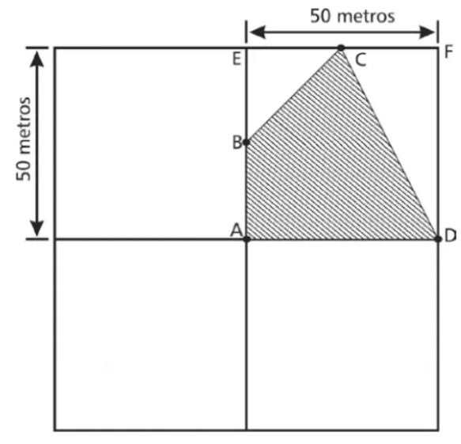
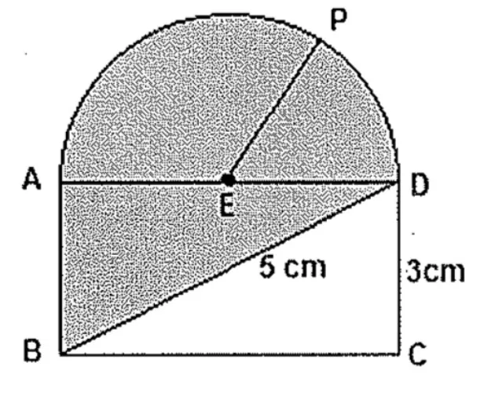
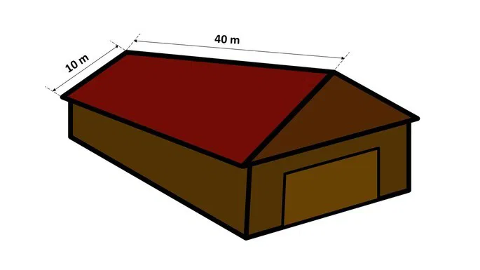

A área quadrada de um sítio deve ser dividida em quatro partes iguais, também quadradas, e, em uma delas, deverá ser mantida uma reserva de mata nativa (área hachurada), conforme mostra a figura a seguir.

Sabendo-se que B é o ponto médio do segmento AE e C é o ponto médio do segmento EF, a área hachurada, em m2, mede
Exercício 2
Um quadrado de lado x e um triângulo equilátero de lado y possuem áreas de mesma medida. Assim, pode-se afirmar que a razão x/y é igual a:
Exercício 3
Uma praça pública em forma de circunferência tem raio de 18 metros. Diante do exposto, assinale a alternativa que apresenta sua área.
Exercício 4
Analise a figura a seguir:

Sabendo que EP é o raio da semicircunferência de centro em E, como mostra a figura acima, determine o valor da área mais escura e assinale a opção correta. Dado: número π=3
Exercício 5

Para reformar o telhado de seu armazém, Carlos decidiu comprar telhas colonial. Utilizando este tipo de cobertura são necessárias 20 peças para cada metro quadrado de telhado.